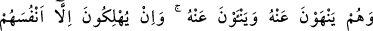

Sana Kur’an’dan bir harften başkası nasip olmazsa, şaşmamalı
Çünkü kör olan göz sadece sıcaklığını görür güneşin
“Onlar her türlü mu’cizeyi görseler de” Kur’ânî delilleri kulaklarıyla işiterek şâhit
olsalar da “yine onlara inanmazlar.” Aşırı inat ve körü körüne taklidleri sebebiyle
onlara “sihirdir, iftiradır, geçmişlerin masalıdır” derler.
“Hatta sana geldiklerinde, seninle tartışırlar.” “Onların Kur’an’ı anlamalarını
önlemek için Allah’ın koyduğu mâni o dereceye varmıştır ki, senin yanına geldiklerinde
kalkıp seninle mücadele ederler.
“O kâfirler:” Kur’an âyetlerini dinledikleri vakit sadece inanmamakla yetinmezler,
bilakis ona iftira ederek “Bu, eskilerin masallarından” boş sözlerinden ve
yalanlarından “başka bir şey değildir” derler.”
Mesnevî’de şöyle denilmiştir:
Allah’ın kitabı kendilerine gelince de
Bu çeşit kınadılar o kâfirler
“Esâtîrdir, eski masallardan ibaret
Derin bahisler, yüce hakîkatler de yok” dediler.
Ey oğul! Sen Kur’an’ın yalnız zâhirine bakma
Şeytan da Adem’i topraktan ibaret gördü, hakîkatine eremedi.
26. Onlar, hem insanları Peygamber’e yaklaşmaktan vazgeçirmeye çalışırlar, hem
de kendileri ondan uzaklaşırlar. Oysa onlar farkında olmadan ancak kendilerini
helak ederler.
“Onlar” kâfirler “hem insanları ondan” Kur’an’dan ve ona îmandan “menederler,
hem de kendileri ondan uzak dururlar.” Yani, Kur’an’dan son derece uzak olduklarını
göstermek ve insanları ondan menetmelerini pekiştirmek için kendilerini ondan
uzaklaştırırlar. Meneden kimsenin menettiği şeyden kaçınması, menetmeyi tamamlayıcı
unsurlardandır. Belki de âyet-i kerîmede “uzak olma”nın, “men etmek”ten sonra
zikredilmesinin sırrı budur.
“Böylece yalnız kendilerini mahvediyorlar,” Yani onlar, insanları Kur’an’dan ve
îmandan alıkoymakla ve kendileri de bunlardan uzak durmakla, sadece kendi nefislerini
helâk ediyorlar. Çünkü bu tavırlarının zararı kendilerinedir. “Ama farkında değiller.”
Onlar ne yaptıklarını bilmiyorlar. Yaptıklarının yalnızca kendilerini helâk ettiğinin
farkında değiller. Oysa, inkârcıların bu yaptıkları Kur’an’a, Rasûlullah’a ve mü’minlere